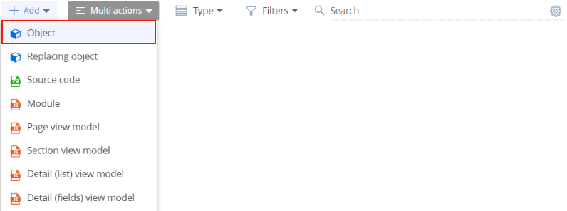
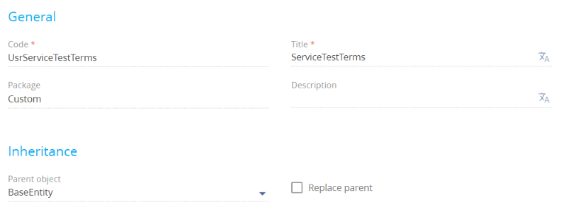
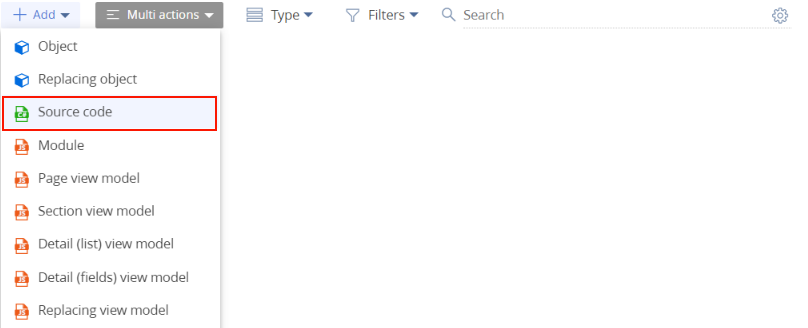
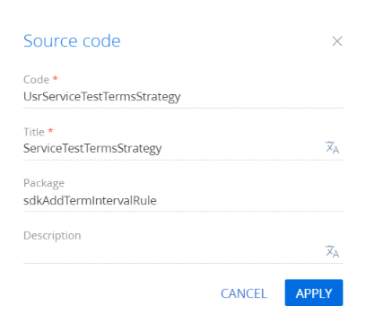

1. Создать схему объекта
- Перейдите в раздел Конфигурация (Configuration) и выберите пользовательский пакет, в который будет добавлена схема.
-
На панели инструментов реестра раздела нажмите Добавить —> Объект (Add —> Object).
 -
В дизайнере схем заполните свойства схемы:
- Код (Code) — "UsrServiceTestTerms".
- Заголовок (Title) — "ServiceTestTerms".
- Родительский объект (Parent object) — выберите Базовый объект (BaseEntity).
Для применения заданных свойств нажмите Применить (Apply).
2. Добавить в объект колонки
В схеме объекта ServiceTestTerms создайте набор колонок со следующими свойствами:
| Название | Заголовок | Тип | Описание |
|---|---|---|---|
| UsrReactionTimeUnit | Единица измерения времени реакции (Response time unit) | Справочник [Единица времени] ([Time unit]) | Указывает единицу измерения времени (календарные дни, часы и т.д), по которой будет рассчитан параметр [Время реакции]. |
| UsrReactionTimeValue | Значение времени реакции (Response time) | Целое (Integer) | Колонка для хранения значения срока реакции. |
| UsrSolutionTimeUnit | Единица измерения времени разрешения (Resolve time unit) | Справочник [Единица времени] ([Time unit]) | Указывает единицу измерения времени (календарные дни, часы и т.д.), по которой будет рассчитан параметр [Время разрешения]. |
| UsrSolutionTimeValue | Время разрешения (Resolution time) | Целое (Integer) | Колонка для хранения значения срока разрешения. |
| UsrCalendarId | Используемый календарь (Calendar that is used) | Справочник [Календарь] ([Calendar]) | Календарь, по которому будут считаться сроки в обращении. |
| UsrServicePactId | Сервисный договор (Service agreement) | Справочник [Сервисный договор] ([Service agreement]) | Ссылка на объект [Сервисный договор]. Добавлена для возможности осуществлять фильтрацию. |
| UsrServiceItemId | Сервис (Service) | Справочник [Сервис] ([Service]) | Ссылка на объект [Сервис]. Добавлена для возможности осуществлять фильтрацию. |
Опубликуйте схему объекта нажав кнопку Опубликовать (Publish).
2. Создать справочник и заполнить его необходимыми значениями
Для расчета сроков реакции и разрешения обращения необходимо предоставить их конкретные значения. Для этого на основе добавленной схемы создайте справочник со следующими свойствами:
- Название (Name) —"Пользовательские сроки реакции и разрешения" ("Custom response and resolution deadlines").
- Объект (Object) — "ServiceTestTerms".
В наполнение созданного справочника добавьте запись с данными по условиям примера:
3. Реализовать класс для получения временных параметров
- Перейдите в раздел Конфигурация (Configuration) и выберите пользовательский пакет, в который будет добавлена схема.
-
На панели инструментов реестра раздела нажмите Добавить —> Исходный код (Add —> Source code).
 -
В дизайнере схем заполните свойства схемы:
- Код (Code) — "UsrServiceTestTermsStrategy".
- Заголовок (Title) — "ServiceTestTermsStrategy".
Для применения заданных свойств нажмите Применить (Apply).
- Реализуйте логику получения временных параметров.
-
В исходный код схемы добавьте класс-наследник абстрактного класса BaseTermStrategy пакета Calendar. В классе реализуйте параметризованный конструктор со следующими параметрами:
- UserConnection userConnection — текущее подключение пользователя;
- Dictionary
args ,> — аргументы, на основании которых будет выполняться расчет.
- Реализуйте объявленный в базовом классе абстрактный метод GetTermInterval(). Этот метод в качестве входного параметра принимает маску уже заполненных значений, на основании которой будет принято решение о заполнении конкретных временных параметров возвращаемого класса TermInterval, реализующего интерфейс ITermInterval
.
UsrServiceTestTermsStrategy.cs -
Опубликуйте схему, нажав кнопку Опубликовать (Publish).
4. Подключить новое правило
Добавьте значение в справочник Правила расчета сроков по обращениям (Case deadline calculation schemas). В колонке Обработчик (Handler) укажите полное квалифицированное имя созданного класса (с указанием пространства имен).
При необходимости в колонке Альтернативное правило (Alternative schema) можно указать правило, по которому будут рассчитаны сроки в том случае, если расчет сроков с учетом текущего правила не представляется возможным. При этом следует учитывать, что если любой из временных параметров не будет рассчитан классом стратегии, то будет создан экземпляр класса альтернативной стратегии. Если же и альтернативная стратегия не сможет рассчитать сроки, то будет создана ее альтернативная стратегия, таким образом формируется очередь правил.
Для добавленной записи необходимо установить признак По умолчанию (Default).
Пример добавленной в справочник Правила расчета сроков по обращениям (Case deadline calculation schemas) записи показан на рисунке.
Результат выполнения примера
В результате для обращений по сервисному договору 78 — Elite Systems для сервиса Восстановление утерянных данных (Lost data recovery) будут применены новые правила расчета сроков реакции и разрешения.